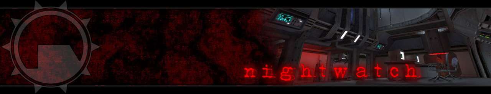

Prepare for Unforeseen Consequences.
Half-Life: Nightwatch. A sprawling, ambitious Half-Life mod set
mostly in Black Mesa. But it is a Black Mesa that looks better than
we’ve ever seen it, perhaps on any engine. Made by a team of dozens, in
addition to the gorgeous levels it features new weapons, new music,
new characters and enemies.
Half-Life: Nightwatch, cancelled 9 years ago, July 12th, 2006. It remains unreleased.
The Good News:
stay tuned here at Goldsource Gold, because for the next couple weeks
I’ll take you on a journey that will show off what Nightwatch was and could have
been. I hope to do it justice.
It’ll be all the official screenshots I’ve been able to
collect over the years (close to 90 of them), other goodies collected
from the old Nightwatch site like music and background information, and a
couple nifty surprises. :)